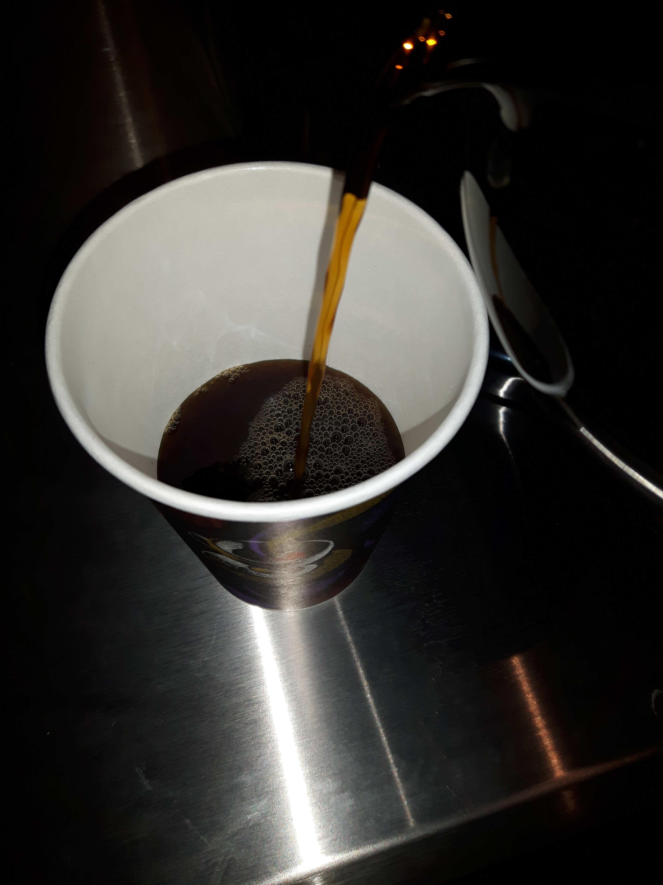

Patricia Rose's
Patricia Rose's is a unique, affordable, independently owned, Breakfast and Lunch, Take-Out Restaurant that serves a great cup of Coffee.
Not only here to serve local businesses and residents on a daily basis, we also do Beautiful Party Trays including Appitizers for your special gatherings.
To inquire, please don't hesitate to call Chef Patricia May at 226-220-4608 or email her at prmay@outlook.com
Not only here to serve local businesses and residents on a daily basis, we also do Beautiful Party Trays including Appitizers for your special gatherings.
To inquire, please don't hesitate to call Chef Patricia May at 226-220-4608 or email her at prmay@outlook.com
